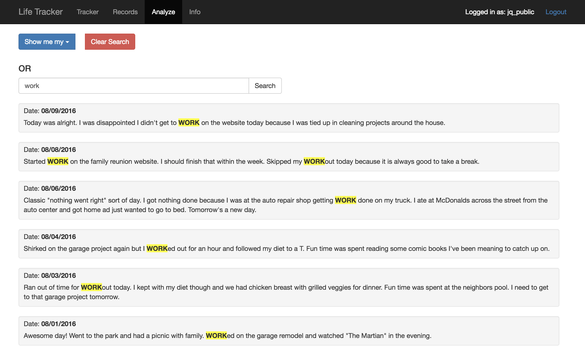
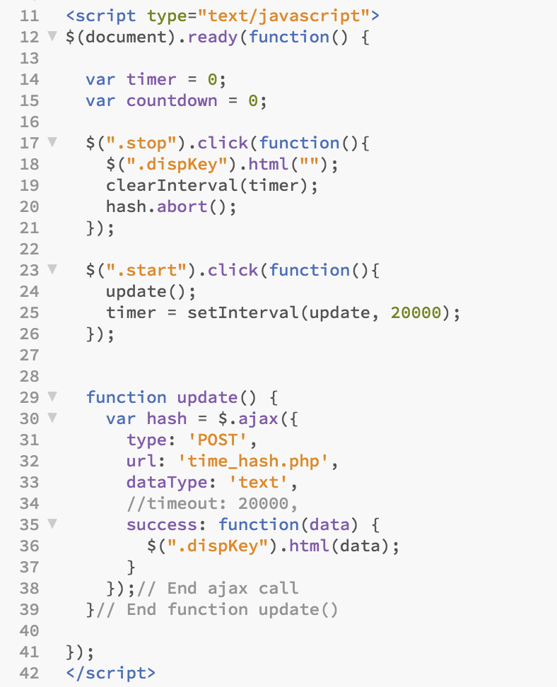

Scott Duncan
GitHub Account
Contents
Nancy Wilson Counseling
A Website Redesign with Wordpress
Original Site
{kind=link}
A client came to me with a request to update their website and bring it into the modern age. In discussing the project, the client desired the ability to make small alterations to text and photos. This requirement was important because of the difficulty she faced in making changes to the previously built site.
I suggested a WordPress installation that would allow her to make the changes she needed with little to no coding knowledge. It was important for the client to keep a the same functionality of the site but add the bells and whistles that are present on modern sites. Borrowing the same color palette and text found on the original, I modified a clean design template.
Updated site: http://www.nancywilsoncounseling.com/
Features
- Modernized all text, images, and overall layout of the site.
- Implemented the use of Child Themes for making edits to the source code of the chosen theme.
- Added a contact form, enabling potential and existing clients to send a message outside of an email client.
- Added a Blog section to allow the client to share interesting articles and write custom posts.
- Archived the old site and uploaded the update on the client's web server.
'Deal or No Deal' Windows Form Application
A game developed in Visual Studio and C#
View Project on GitHub
I decided to challenge myself after learning the basics of C# and created this game using Visual Studio. I saw this independent project as a good challenge to work with not only Windows Forms and their GUI elements, but also Object Oriented concepts such as classes and inheritance.
Code Snippits
I made use of arrays and a class called Cases to insert dollar values into the cases. The cases are Windows Form picture boxes. A hash set of random numbers was used to distribute the winnings into the cases without worrying about duplicate values.

I implemented a switch statement to deal with the number of rounds. Since the number of cases a user selects is different every round, a switch was a perfect choice instead of a long nested “IF” chain.
{kind=link}
Most of the heavy lifting in this program is done when a user clicks on a case. The onClick click event handler was used to visually eliminate the case, the corresponding dollar amount, and set a ‘working value’ to the case that is used later on when determining the payouts/Banker’s offer. It also toggles the active state of the case to ‘FALSE’, making the case un-clickable.
A simple counter was used to limit the number of cases a user is able to select each round. Each case that is selected increases the counter by 1, and this is compared against the round number to determine the number of allowed selections.
{kind=link}
The Banker’s offer is a simple weighted average equation. The average of the cases is determined and then an incentive percentage is factored in based on the current round. Earlier in the program, when a user selects a case, the value is changed to ‘0’ to ensure that it is not accounted for in the Banker’s offer.

New forms are called when appropriate, passing all needed information to the accepting form. A menu bar was added for users to exit the program or launch a ‘Help’ menu.
{kind=link}
{kind=link}
Here is the code for the class file 'Cases'
{kind=link}
Gameplay Screenshots
{kind=link}
Chip-Trap
Website Redesign and Responsive Overhaul
Original Site: http://chiptrap.com/
{kind=link}
I took a request from a client to overhaul their existing outdated static website. The original site was built-in Microsoft Front Page circa the early 2000’s. The website needed a lot of work. I implemented the responsive features through the use of Twitter Bootstrap. I also implemented a contact form to send email about product inquiries.
The client wanted to keep the original feel of the website intact by using the same color scheme, but the aesthetics were in need of a modern feel. Bootstrap wells and panels provided the look and feel the client was going for with minimal adjustments to the already robust CSS library. The logo was converted to a vector .svg to enhance readability at all screen resolutions.
Updated Site: http://shop-products.machiningsolutions.net/
Web Application
LifeTracker: http://lifetracker.case-break.com/
View Project on GitHub
Project Overview
I set out to build a simple web application to help users track various metrics of their lives in order to track the things that account for having a "good day". The application was built using PHP and Bootstrap with a MySQL Database.
Using metrics such as hours of sleep, proper diet, exercise and goal progress/completion, the application kept track of entries and allowed users to query various data sets based on their input. A general "Notes" section was also added for users to utilize as a mini daily journal to write whatever they please about their day.
Entry Form
{kind=link}
Analyze Data
{kind=link}
Search and sort functionality was also implemented to allow users to search for keywords in their notes.
{kind=link}
User records are displayed in a responsive table with labels and meaningful color coordination allowing for "at a glance" review. Pagination was implemented for better single page readability.
Display Records
{kind=link}
Project Outcome and Reflection
While the application is still an ongoing personal project, the beta test results led me to rethink the direction of the project. Users simply were not using the app. Feedback showed that users desired the ability to enter their own custom metrics to personalize the application for their needs. Users also stated they would benefit from a reminder to log their entries every day.
Future plans for this project include custom metrics and creating a native mobile application that will assist in sending daily reminders via notifications.
I learned a lot from the process of creating and releasing this application. I learned that sometimes the best feedback you get is when you get no feedback at all. I learned that listening to users and their suggestions are what drives a project like this to success. As a developer, it is my job to cater to the audience using the product, and not what I think should universally apply to all users.
Capstone Project
Student Response System
Project Overview
Myself and two other students formed a group to work on our final Capstone project for graduation. We were tasked with developing a "Student Response System" for classrooms. The application would allow Instructors to create question sets that are displayed on the class projector and mirrored to a students screen when they are logged in to the class.
The application allows for real-time polling of the student's responses. The advantage to this system over the standard model of the instructor standing in front of the students and asking them questions is that all students get the opportunity to "answer" the question and for the instructor to gain advanced insight into the overall comprehension level of the class.
The workload was split evenly among the group members, with me being in charge of user registration, form and error handling, password security and recovery, database construction, and secure login to the appropriate "digital classroom".
Code Snippits
Below are snippets of code relating to my portion of the project. This project is still in development.
Registration, validation, and error handling
This is one of the validation functions used to validate a user's email address. The function verifies the email entered against a regular expression and also queries the database to ensure the email is unique.
{kind=link}
If the email is already found in the database, an error message is displayed to the user.
{kind=link}
Upon successful entry in the registration form, the user is entered into the database using this line of SQL code. PDO connections were utilized with parameterized queries for security.
{kind=link}
Password security and recovery
Instead of using md5() hashing functions for passwords, I opted to go for the more secure password_hash($string, PASSWORD_DEFAULT) function. Passwords are then verified using the password_verify() function.
Password recovery is done through email. A user enters an email and a token is generated by running the server time through md5() and salting it with the user's username.
{kind=link}
A link gets emailed to the entered email address with the token and the email address in the URL. If the email sends successfully, the user's password is cleared and the token is stored in the database.
{kind=link}
When the recipient clicks the link, the email address is checked against the token. If they belong to the same user, the user then enters and confirms a new password.
Database Construction
Entity Relationship Diagram of 'studentResponse'
{kind=link}
Secure Classroom Login
One of the largest hurdles we faced in this project was ensuring that only the students that were physically in the classroom could participate in the questions.
We wanted a "rolling token" that would be displayed on the instructor's side that the students in the classroom would be required to enter to gain access to the questions. This token would roll over and expire every 20 seconds.
Since each user will be connected to the same server, the server time is a constant variable that both machines have access to. I wrote some code to generate a hash based on the server time.
{kind=link}
An AJAX call is then made every 20 seconds to grab the time hash data and display it.
{kind=link}
The time hash code can be run on both the instructor and the students machine and the student will only need to check against an md5() of the server time, instead of something only the instructor has access to.